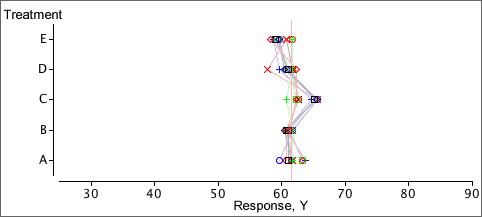
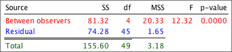

Making all block means equal
Our model for randomised block data explains the effect of the blocks on Y as a addition of a "block effect" to all values within each block. This suggests eliminating differences between the blocks by adjusting the values in all blocks to have the same block means.
Example
The diagram below shows results from an experiment with blocks of size five and five treatments. Different colours are used for the different blocks and the block means are shown with vertical lines.
A lot of the variability in the response, Y, is caused by differences between the blocks. The diagram below adjusts the values by adding a constant to all values in each block, givving all blocks the same mean response.

Since there is now much less 'unexplained' variation and there are now no differences between blocks, applying the standard anova test for equal treatment means to the adjusted data seems reasonable and is much more sensitive to treatment differences:

The treatment and residual sums of squares shown here are the basis for testing whether the treatment means are equal, but the analysis is not completely correct.
| The residual degrees of freedom are too high. |
The correct analysis of variance table for testing equal treatment means is a little more complex for randomised block data; it will be explained in the following pages.